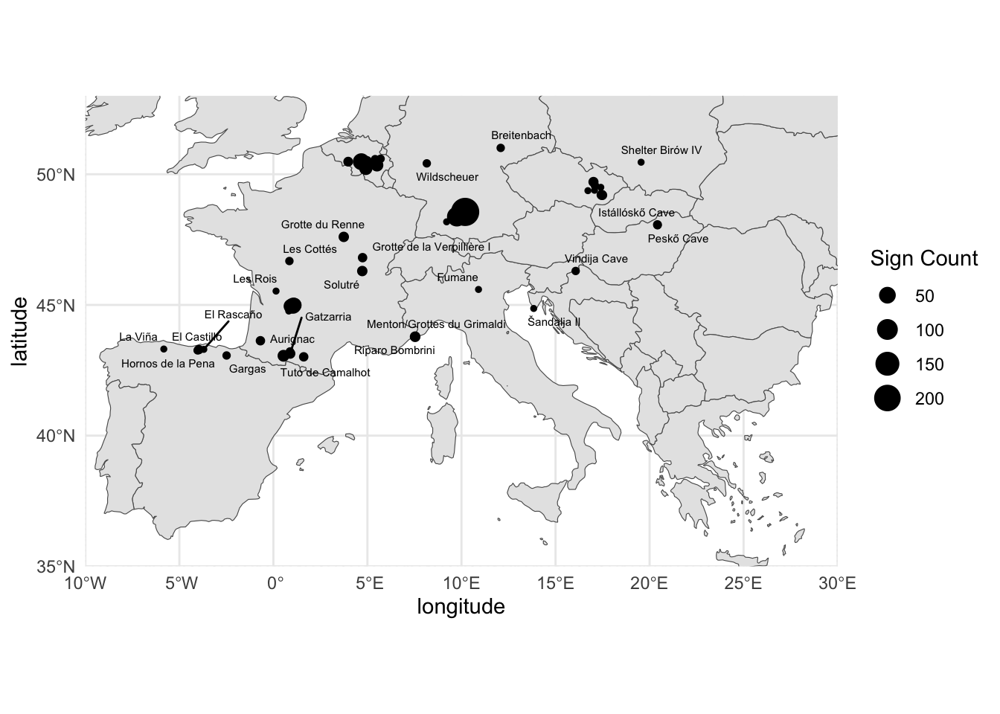
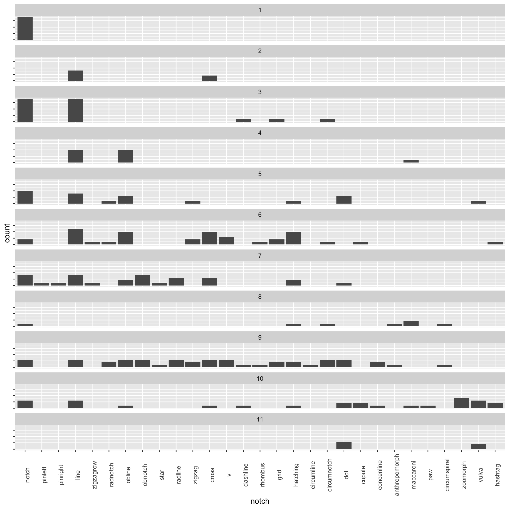
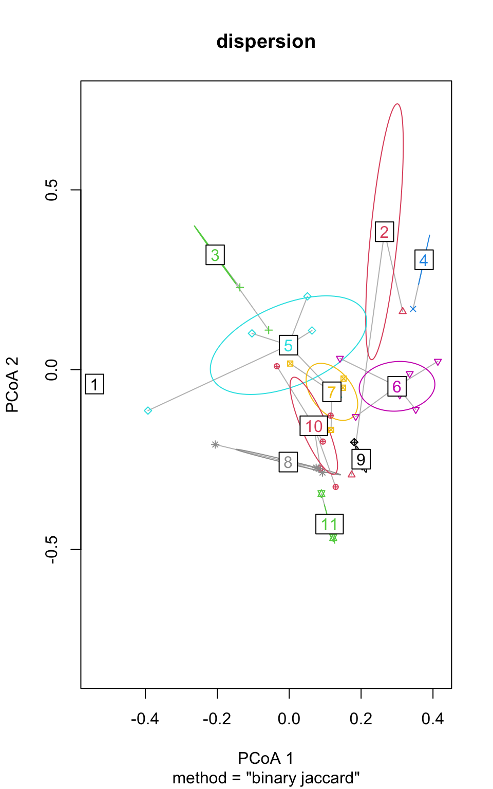
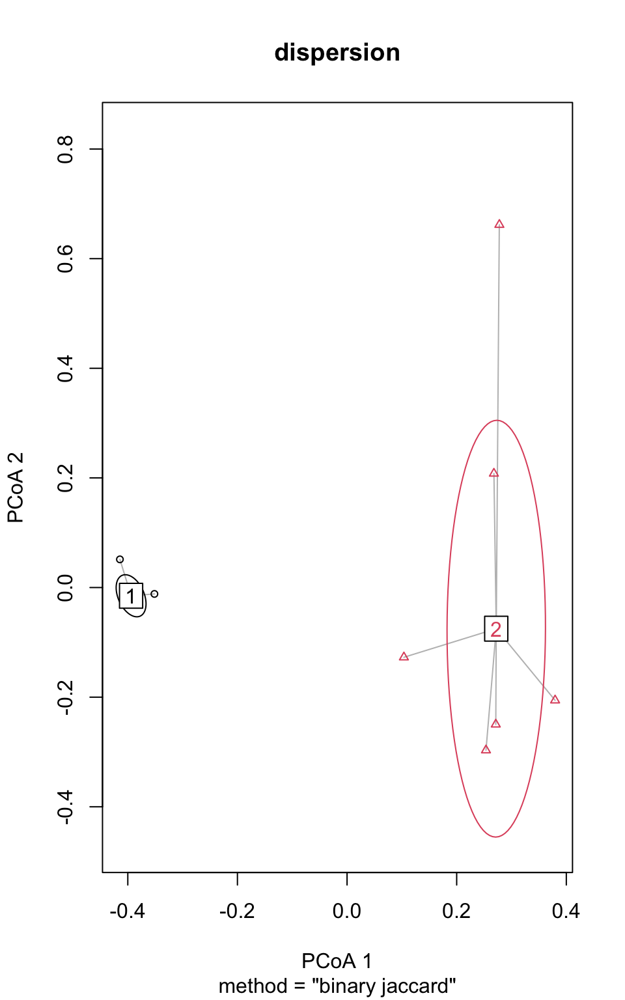
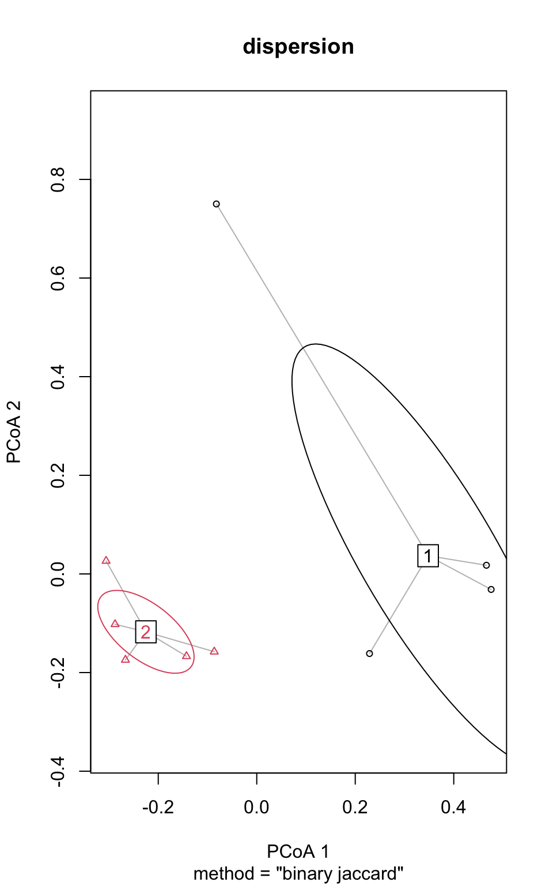
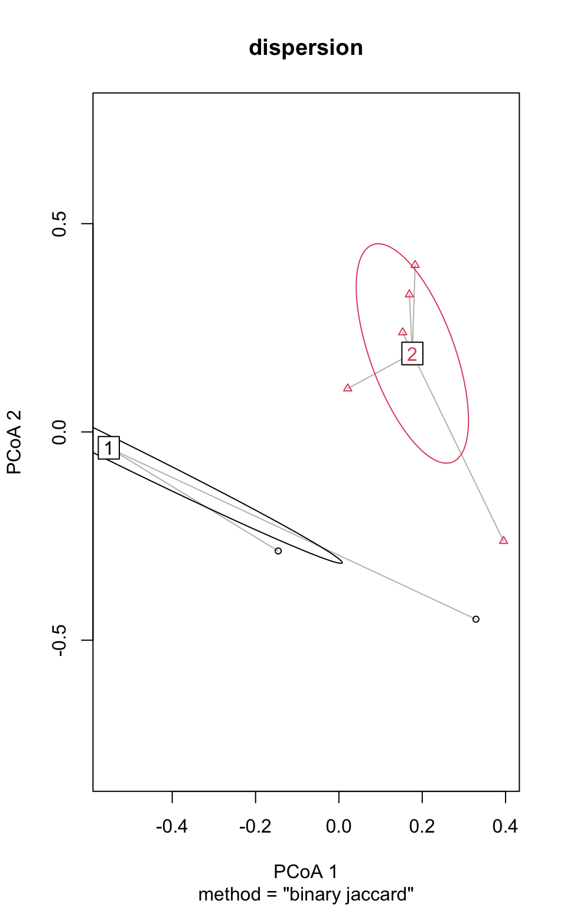

| Time Period Name | Dates (k cal BP) | Material Culture Markers | Environmental Context |
|---|---|---|---|
| Transitional | 43 - 41.5 | Sidescrapers, bladelets, split-base points, flake production scheme, Mousterian influencs still present | Greenland Interstadial 11 |
| Proto-Aurignacian | 41.5 - 39.8 | Large, straight bladelets from priasmatic and pyrimidal cores, | Greenland interstadial 9 and 10 |
| Early Aurignacian | 39.8 - 37.9 | Twisted bladelets produced from carinated cores | Begins with Henrich stadial, ends with Greenland Interstadial 8 |
| Evolved/Late Aurignacian | 36.8 - 32 | Backed microblade, more varied tool kits, beginnings of Gravettian influence | Greenland Interstadial 8 - 6 |
Geometric Signs on Paleolithic Mobile Objects as Cultural Group Markers Across Aurignacian Time Periods
Introduction and Background
The Upper Paleolithic period experienced a rise in more complex social organizations across Europe (Boyd and Silk 2020) coupled with biological evolution. Another distinctive quality of the Upper Paleolithic is the large rise in artwork, both parietal and mobile. Archaeologists have frequently relied upon that artwork as a proxy for cultural difference in order to understand the shifting patterns of social organization and diversity of the Upper Paleolithic Vanhaeren and d’Errico (2006). Considered to be the starting point of the Upper Paleolithic, the Aurignacian period (ca. 43,000 - 30,000 years BP) is commonly linked to the dispersal of Homo sapiens across Western Eurasia, and is characterized by certain lithic and osseus markers (Tejero and Grimaldi 2015; E. Tartar 2012), many of which are decorated with geometric signs (Dutkiewicz et al. 2020). In this paper, we analyze the distribution and variation of geometric sign types found on mobile artefacts from the Upper Paleolithic in Europe across the phases of the Aurignacian period.
Social organization dynamics have previously been explored using cluster analysis methods upon variations in artefacts to represent and understand patterns of cultural groups. For example, multivariate analyses of variations in Gravettian beads suggests an east to west cline of nine cultural groups (Baker et al. 2024). Seriation analysis, PCoA, and network analysis were used to identify the groups from the bead data, which consisted of 134 discrete bead variations from both burial and occupation sites, as distinguished by shape and material. The geographically discrete groups identified encompass the regions of eastern, northwestern and central Europe, the northern and southern Iberian peninsula, southern and northern Italy, and the eastern and Western Mediterranean regions. The isolation-by-distance hypothesis, which proposes that cultural difference can be primarily explained by geographic distance, was tested using a Mantel test, finding that geographic distance cannot solely account for the bead distribution, proving the influence of cultural and social dynamics on the groups found.
In another study to find cultural groups, similar analyses were performed upon personal ornament types from the Aurignacian period, with the variation in types serving as a proxy for linguistic diversity (Vanhaeren and d’Errico 2006). Seriation, correspondence, and GIS analyses were performed upon a personal ornament data set, which consisted of 157 distinct ornament types from Eastern Aurignacian sites. The analyses identified fourteen geographically cohesive groups sharing similar ornament type associations, which sweep counter-clockwise throughout western France, northern Spain, the Pyrenees, and the Mediterranean region. The possibility that the observed groups were influenced by availability of raw materials was considered, and ultimately discarded as an explanation for the patterns.
Additionally, Sauvet et al. (2018) used quadrilateral geometric parietal signs to identify Upper Paleolithic cultural groups in the Cantabrian region of Spain. The authors identified and classified the signs based on variations in form, then performed a factorial correspondence analysis and ascending hierarchical clustering upon the data. Two clusters were identified from those methods, representing two distinct cultural groups. Sauvet et al. (2018) makes a case for the relevance of geometric signs as identity markers in identifying cultural groups, pointing to the relevant qualities of signs, as well as historical and ethnographic case studies of signs serving as markers of group membership case studies.
Following the work done by Baker et al. (2024), Vanhaeren and d’Errico (2006), and Sauvet et al. (2018), in using variation in ornamentation and signs to identify cultural groups, we look to see how geometric sign design changes across the sub-periods of the Aurignacian period. The Aurignacian period occurred roughly 43,000 - 30,000 years BP, and is largely characterized by material culture indicators, as well as an ongoing biological shift from Neanderthals to early modern humans. Chronology of the Aurignacian is primarly determined by correspondance with those material culture markers, which include carinated scrapers, small-flake tool and split-based bone and ivory tools (Chu and Richter 2020). The Aurignacian can be divided into phases, again mainly distinguished by shifts in material culture; Proto, Early, Evolved, and Late Aurignacian (É. Tartar 2015), as can be seen in Figure 1. Shao et al. (2021) divided the Aurignacian into two main periods, Aur-P1 (Proto/Early), whose typological observations corresponded with the time period of 43–37 kyr BP, and Aur-P2 (Evolved/Late), which corresponds with the time periods kyr BP and 37-32 kyr BP. Banks, d’Errico, and Zilhão (2013) used Bayesian modeling methods to further divide Aur-P1 into the Proto and Early Aurignacian, placing the Proto-Aurignacian at 41.5 - 39.9 k cal BP, and the early Aurignacian at 39.8 - 37.8 k cal BP. They found that the Proto-Aurignacian occurs during the Greenland Interstadials 9 and 10, periods of climatic amelioration, while the Early Aurignacian began with the Henrich Stadial, which is characterized by dry and arid conditions, and ended with Greenland Interstadial 8.
In this study, we aim to address the following questions: How does sign distribution change across phases of the Aurignacian? How do the groupings in sign distribution vary in diversity, size, connectivity, and boundaries? What do the patterns tell us about dynamics of social organization throughout the Aurignacian? First, we identify clusters within each time period using seriation and network analysis. We then test the strength of the clusters using modularity, perMANOVA, and PERMDISP2 tests. Lastly, we use mantel tests to evaluate the null hypothesis of isolation-by-distance for each time period.
Methods and Materials
Data

Our data for this paper comes from SignBase, an open-access database collection of geometric signs on mobile objects from Paleolithic-era Europe, which was launched in 2020, with the explicit goal being to enable quantitative analyses of abstract geographical representation (Dutkiewicz et al. 2020). The creators of the database identified around 30 distinct geometric sign types, and recorded their occurrences on mobile artefacts from the Paleolithic. Identification and categorization of the sign types had already been performed by the creators of the SignBase database, the methods for which are described in Dutkiewicz et al. (2020), and we adhered to those categories and placements.
The data set consists of 531 artifacts found at 65 sites in 13 countries. The database records 55 geometric sign type found on these artifacts. We excluded signs if they fell under the “other” category, as the wide range of possibilities that could qualify as “other” means that it would be difficult to establish a definitive connection. We also excluded all data from Willendorf (only one sign present), and Riparo di Fontana Nuova, Muralovka, Shanidar Cave, and Hayonim Cave (due to their extreme geographic distance from the other sites). After those sites were excluded, all signs under the “rectangle” category were also removed as a side effect of that exclusion. Lastly, data from Grotte De La Princesse Pauline and Šandalja II was excluded, due to being dated much earlier than the rest of the artifacts.
These exclusions resulted in 438 artifacts found at 30 sites in 7 countries, encapsulating 54 sign types. All our tests were run with presence/absence data, in order to keep the data from being affected by outliers like Vogelherd. We ran a Mantel test between an abundance distance matrix and and a Euclidean distance matrix in order to make sure that the exclusion of abundance would not significantly impact our results, and found that it was not quite statistically significant (Lycett 2019) (P = 0.072, Mantel R = 0.109).
Maximum and minimum BP dates were provided by Signbase, and calibration was done through the rcarbon package in RStudio. The calibrated radiocarbon dates of the artifacts range from approximately 32,893 BP to 44,778 BP, spanning an overall time range of 11,885 years. We divided the data up into four periods in accordance with the date ranges provided in Figure 1.
Testing for Cultural Groupings
Seriation analysis is the arrangement of data into a linear order to reveal patterns, and is a common technique in analyzing sets of archaeological data (Hahsler, Hornik, and Buchta 2008). Seriation in this paper was performed using code designed to mimic the Browner-Kile seriation algorithm (Brower and Kile 1988), in which the data is presented in a matrix diagram, and a unidimensional sequence is generated by reordering the rows and columns to group the presences along the diagonal. This is done so by calculating the mean row and column positions of presences, and arranging the rows and columns by respectively.
Network analysis represents the relationship between nodes (Mills 2017). In this network analysis, each node is a site, and each edge is a measure of sign similarity, with the direct value represented by edge weight. The results were plotted with the Fruchterman-Reingold layout (Fruchterman and Reingold 1991), a force-directed graph layout for uniform edge lengths.
Testing Strength of Cultural Groupings
The modularity test quantifies the randomness of the groupings by measuring the fraction of the edges in the network that fall within groups, minus the expected value if the edges were placed at random Newman and Girvan (2004). The results are expressed in a score of 0 to 1, with 0 meaning no significant subgroups, and 1 meaning perfect groupings. The PerMANOVA test quantifies the level of variation between groups versus the level of variation within groups (Anderson 2017), with the results expressed by an R-statistic, and a P-score.
PERMDISP is a multivariate extension of Levene’s test Anderson, Ellingsen, and McArdle (2006), for the analysis of multivariate homogeneity of group dispersion. In this study, we perform the PERMDISP test upon the Jaccard matrix as a measure of compositional dissimilarity. We did so using the “betadisper” function from the RStudio package ‘vegan’, which mimics the PERMDISP2 procedure (Oksanen et al. 2001). In this code, the non-euclidean distance matrix is reduced to principal coordinates to embed them within a Euclidean space. The results are used to produce a visual of the level of overlap between the groups in terms of sign content.
Testing Isolation-by-Distance Hypothesis
The isolation-by-distance framework proposes that cultural difference can be primarily explained by geographic distance. Assuming that this framework is true, we would hypothetically see patterns of cultural features of Upper Paleolithic early modern humans that are dispersed according to geography. Mantel tests are used here for each time period to determine the correlation between sign distribution and geography. The Mantel test is run between a geographic distance matrix and a Jaccard dissimilarity matrix. The test seeks to determine the level of correspondence between the matrices through permuational evaluation of the null distribution (Smouse and Long 1992), producing a p-score as a result.
Results
Testing for Cultural Groupings
Seriation

Network Analysis

Combining the results of the above tests allowed us to find two groups of sites within each time period, as shown in Figure 5. The geographic distributions of the groups are shown in Figure 6, and the sign makeup of each group is shown in Figure 7.
Groups
| Time Period | Group | Site Names |
|---|---|---|
| Transitional | 1 | Pod Hradem, Fumane, Labeko Koba |
| Transitional | 2 | El Castillo, Hohle Fels, Geissenklösterle |
| Proto-aurignacian | 1 | Gatzarria, Hohlenstein-Stadel, Mladeč, Abri Pataud, |
| Proto-aurignacian | 2 | Geissenklösterle, Grotte du Renne, Vogelherd, Spy, La Ferrassie, Les Cottés |
| Early aurignacian | 1 | Grottes de Fonds-de-Forêt, Riparo Bombrini, Grotte de la Verpillière I, Vindija Cave, Trou al’Wesse |
| Early aurignacian | 2 | Hohle Fels, Solutré, Castanet, Cellier, Blanchard |
| Evolved aurignacian | 1 | Les Rois, Gargas, La Viña, Sirgenstein Cave |
| Evolved aurignacian | 2 | Bockstein-Törle, Vogelherd, Hohle Fels, Trou Magrite |


Testing Strength of Cultural Groupings
| time period | modularity |
|---|---|
| transitional | 0.4897959 |
| proto | 0.4958678 |
| early | 0.4938272 |
| evolved | 0.5000000 |
| time period | permanova r | permanova p |
|---|---|---|
| transitional | 0.2330009 | 0.300 |
| proto | 0.2741417 | 0.012 |
| early | 0.2100885 | 0.012 |
| evolved | 0.2312869 | 0.015 |
The r value from the perMANOVA tests tell us that for each of the time periods, around 20% of the variation in sign content can be explained by group membership, with the proto-aurignacian having the highest score of 27%, and the early aurignacian having the lowest score of 21%. The perMANOVA p value quantifies the randomness of the groupings, with 0.05 as the threshold for definitive non-randomness. The only time period to not meet that threshold is the transitional period, with a p-score of 0.3.




Testing Isolation-by-Distance Hypothesis
| time period | mantel r | mantel p |
|---|---|---|
| transitional | 0.421 | 0.081 |
| proto | -0.188 | 0.872 |
| early | 0.259 | 0.075 |
| evolved | -0.055 | 0.589 |
The relevance of the isolation-by-distance hypothesis also varies from period to period. # Discussion
In this paper, we set out to ask if identifiable and relevant patterns existed in the data, and if so, what could they tell us about the patterns of diversity and movement among Upper Paleolithic humans?
Through our various analyses, we saw that the isolation-by-distance framework could not account for the distribution of sign types. Specifically, our Mantel test () found no statistically significant relationship between geographic distance and sign variation. Therefore, we must look to other factors to explain the distribution. We also saw distinct groupings in the data, as demonstrated in Figure 3, Figure 4, and. We divided the sites into approximately ten groups based on sign types with a modularity score of .
shows groups with sites both clustered geographically speaking, and more distant from each other, potentially showing us cultural groups and patterns of movement.
One explanation for the sign type distribution could be that the groupings of the data represent cultural groups, as indicated by sign type patterns, and the geographic distribution between sites represent group mobility. Whallon (2006) proposes a framework for understanding hunter-gatherer mobility, arguing that mobility occurs among hunter-gatherers for multiple reasons. The first two reasons, referred to by Whallon as logistical and residential mobility, occur when groups move in order to procure a new supply of resources once the more immediate ones have been depleted. Another type of mobility is network mobility, in which groups, or subsets of groups, move in order to make contact with other groups. This occurs in order to form a “safety net”, in times of scarce resources, so that groups are assured of a positive reception if they are forced to move. Lastly, and similarly, is informational mobility, in which groups, or individuals, move with the primary goal of gathering information, typically about the environmental conditions and resources in other areas. Similarly, this operates as a “safety net” of sorts, in that these groups then posses knowledge on where to move in times of resource scarcity. One point of note is that, according to Whallon (2006), decorative objects may be exchanged as a method of network formation, which may account for the presence of some signs at some sites.
Further research will need to be done on this topic in order to understand these patterns. In particular, the ecological and biogeographical conditions at the sites will need to be analyzed for potential connections, as mobility is heavily environmentally-motivated. Additionally, further analysis of the sign type categories as created by Dutkiewicz et al. (2020), as it is possible, when it comes to the simpler signs, for identical creation to occur independently.
However, this preliminary research has been able to produce some conclusions to be reasonably confident in. Firstly, given that we know definitively that distribution and variation of sign types is not the result of geographic distance, we can conclude that the data is likely relevant to understanding patterns of cultural diversity. Secondly, we have found clusters of sites that correspond in sign type, possibly indicating mobility of specific cultural groups. These conclusions contribute to, and broaden our current understanding of cultural and biological diversity among Upper Paleolithic Homo sapiens in Europe.
Conclusion
References
Anderson, Marti J. 2006. “Distance-Based Tests for Homogeneity of Multivariate Dispersions.” Biometrics 62 (1): 245–53. https://doi.org/10.1111/j.1541-0420.2005.00440.x.
———. 2017. “Permutational Multivariate Analysis of Variance (PERMANOVA).” In Wiley StatsRef: Statistics Reference Online, 1–15. John Wiley & Sons, Ltd. https://doi.org/10.1002/9781118445112.stat07841.
Anderson, Marti J., Kari E. Ellingsen, and Brian H. McArdle. 2006. “Multivariate Dispersion as a Measure of Beta Diversity.” Ecology Letters 9 (6): 683–93. https://doi.org/10.1111/j.1461-0248.2006.00926.x.
Baker, Jack, Solange Rigaud, Daniel Pereira, Lloyd A Courtenay, and Francesco d’Errico. 2024. “Evidence from Personal Ornaments Suggest Nine Distinct Cultural Groups Between 34,000 and 24,000 Years Ago in Europe.” Nature Human Behaviour 8 (3): 431–44.
Banks, William E., Francesco d’Errico, and João Zilhão. 2013. “Human–Climate Interaction During the Early Upper Paleolithic: Testing the Hypothesis of an Adaptive Shift Between the Proto-Aurignacian and the Early Aurignacian.” Journal of Human Evolution 64 (1): 39–55. https://doi.org/https://doi.org/10.1016/j.jhevol.2012.10.001.
Boyd, R., and J. B. Silk. 2020. How Humans Evolved. W.W. Norton. https://books.google.com/books?id=XmrazQEACAAJ.
Brower, James C., and Kenneth M. Kile. 1988. “Seriation of an Original Data Matrix as Applied to Paleoecology.” Lethaia 21 (1): 79–93. https://doi.org/10.1111/j.1502-3931.1988.tb01756.x.
Chu, Wei, and Juergen Richter. 2020. “Aurignacian Cultural Unit.” In Encyclopedia of Global Archaeology, 1–10. Cham: Springer International Publishing. https://doi.org/10.1007/978-3-319-51726-1_3441-1.
Dutkiewicz, Ewa, Gabriele Russo, Saetbyul Lee, and Christian Bentz. 2020. “SignBase, a Collection of Geometric Signs on Mobile Objects in the Paleolithic.” Scientific Data 7 (1): 364. https://doi.org/10.1038/s41597-020-00704-x.
Fletcher, William J., Maria Fernanda Sánchez Goñi, Judy R. M. Allen, Rachid Cheddadi, Nathalie Combourieu-Nebout, Brian Huntley, Ian Lawson, et al. 2010. “Millennial-Scale Variability During the Last Glacial in Vegetation Records from Europe.” Quaternary Science Reviews, Vegetation response to millennial-scale variability during the last glacial, 29 (21): 2839–64. https://doi.org/10.1016/j.quascirev.2009.11.015.
Fruchterman, Thomas M. J., and Edward M. Reingold. 1991. “Graph Drawing by Force-Directed Placement.” Software: Practice and Experience 21 (11): 1129–64. https://doi.org/10.1002/spe.4380211102.
Hahsler, Michael, Kurt Hornik, and Christian Buchta. 2008. “Getting Things in Order: An Introduction to the r Package Seriation.” Journal of Statistical Software 25 (3): 1–34. https://doi.org/10.18637/jss.v025.i03.
Kuhn, Steven L., and Mary C. Stiner. 2007. “Paleolithic Ornaments: Implications for Cognition, Demography and Identity.” Diogenes 54 (2): 40–48. https://doi.org/10.1177/0392192107076870.
Lycett, Stephen J. 2019. “Confirmation of the Role of Geographic Isolation by Distance in Among-Tribe Variations in Beadwork Designs and Manufacture on the High Plains.” Archaeological and Anthropological Sciences 11 (6): 2837–47. https://doi.org/10.1007/s12520-018-0742-3.
Mills, Barbara J. 2017. “Social Network Analysis in Archaeology.” Annual Review of Anthropology 46 (Volume 46, 2017): 379–97. https://doi.org/10.1146/annurev-anthro-102116-041423.
Newman, M. E. J. 2006. “Modularity and Community Structure in Networks.” Proceedings of the National Academy of Sciences 103 (23): 8577–82. https://doi.org/10.1073/pnas.0601602103.
Newman, M. E. J., and M. Girvan. 2004. “Finding and Evaluating Community Structure in Networks.” Physical Review E 69 (2): 026113. https://doi.org/10.1103/PhysRevE.69.026113.
Oksanen, Jari, Gavin L. Simpson, F. Guillaume Blanchet, Roeland Kindt, Pierre Legendre, Peter R. Minchin, R. B. O’Hara, et al. 2001. “Vegan: Community Ecology Package.” https://doi.org/10.32614/CRAN.package.vegan.
Sauvet, Georges, Raphaëlle Bourrillon, Diego Garate, Stéphane Petrognani, Olivia Rivero, Eric Robert, and Gilles Tosello. 2018. “The Function of Graphic Signs in Prehistoric Societies: The Case of Cantabrian Quadrilateral Signs.” Quaternary International, SI: Role of art in prehistory-UISPP2014, 491 (October): 99–109. https://doi.org/10.1016/j.quaint.2017.01.039.
Shao, Yaping, Heiko Limberg, Konstantin Klein, Christian Wegener, Isabell Schmidt, Gerd-Christian Weniger, Andreas Hense, and Masoud Rostami. 2021. “Human-Existence Probability of the Aurignacian Techno-Complex Under Extreme Climate Conditions.” Quaternary Science Reviews 263: 106995. https://doi.org/https://doi.org/10.1016/j.quascirev.2021.106995.
Smouse, Peter E., and Jeffrey C. Long. 1992. “Matrix Correlation Analysis in Anthropology and Genetics.” American Journal of Physical Anthropology 35 (S15): 187–213. https://doi.org/https://doi.org/10.1002/ajpa.1330350608.
Tartar, Elise. 2012. “The Recognition of a New Type of Bone Tools in Early Aurignacian Assemblages: Implications for Understanding the Appearance of Osseous Technology in Europe.” Journal of Archaeological Science 39 (7): 2348–60. https://doi.org/10.1016/j.jas.2012.02.003.
Tartar, Élise. 2015. “Origin and Development of Aurignacian Osseous Technology in Western Europe: A Review of Current Knowledge.” Palethnologie. Archéologie Et Sciences Humaines, no. 77 (December). https://doi.org/10.4000/palethnologie.706.
Tejero, José-Miguel, and Stefano Grimaldi. 2015. “Assessing Bone and Antler Exploitation at Riparo Mochi (Balzi Rossi, Italy): Implications for the Characterization of the Aurignacian in South-Western Europe.” Journal of Archaeological Science 61 (September): 59–77. https://doi.org/10.1016/j.jas.2015.05.003.
Vanhaeren, Marian, and Francesco d’Errico. 2006. “Aurignacian Ethno-Linguistic Geography of Europe Revealed by Personal Ornaments.” Journal of Archaeological Science 33 (8): 1105–28. https://doi.org/10.1016/j.jas.2005.11.017.
Whallon, Robert. 2006. “Social Networks and Information: Non-‘Utilitarian’ Mobility Among Hunter-Gatherers.” Journal of Anthropological Archaeology, Mesolithic mobility, exchange, and interaction, 25 (2): 259–70. https://doi.org/10.1016/j.jaa.2005.11.004.